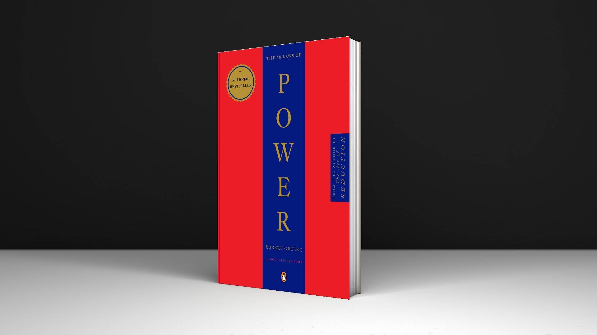
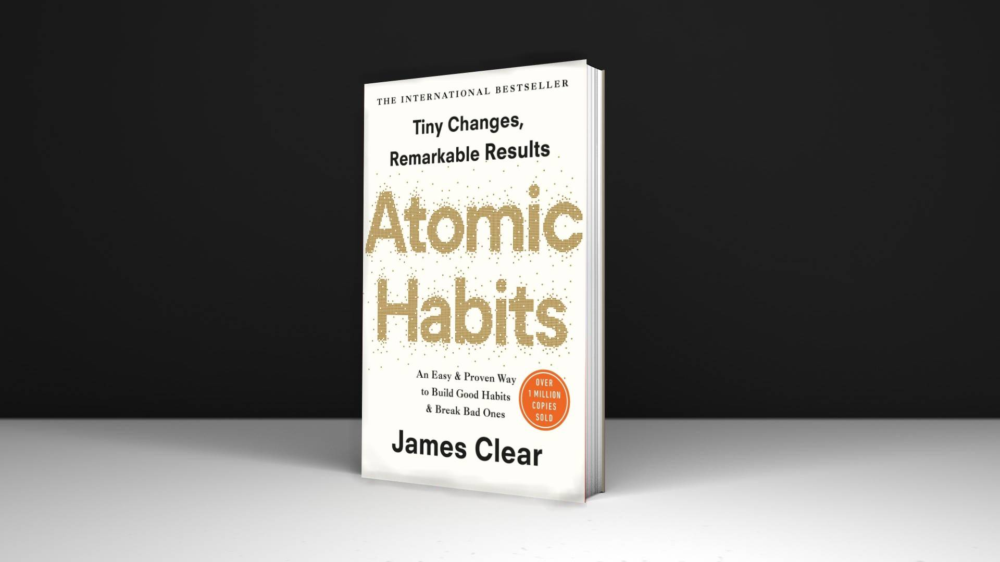

Explore the Infinite
Access the forgotten manuscripts, celestial maps, and
alchemical secrets preserved within our private vaults.
Rare Manuscripts
Ancient Cartography
Lost Alchemy
Celestial Logbooks
Encrypted Ciphers
Curator's Suggestions

The 48 Laws of Power
The book breaks down historical examples, stories, and lessons into clear “laws” that show how power has been gained, maintained, and lost throughout history

Atomic Habits
If you're having trouble changing your habits, the problem isn't you. The problem is your system. Bad habits repeat themselves again and again not because you don't want to change, but because you have the wrong system for change.
The Mountain Is You
The book is about self-sabotage. Why we do it, when we do it, and how to stop doing it—for good.Coexisting but conflicting needs create self-sabotaging behaviors.